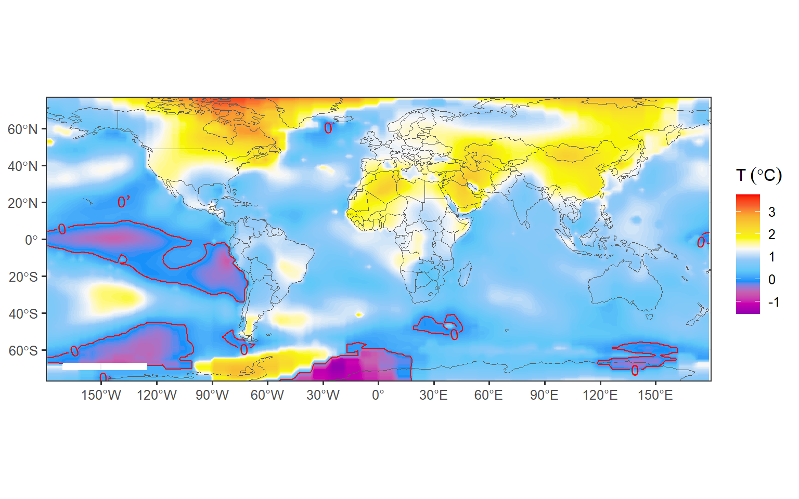
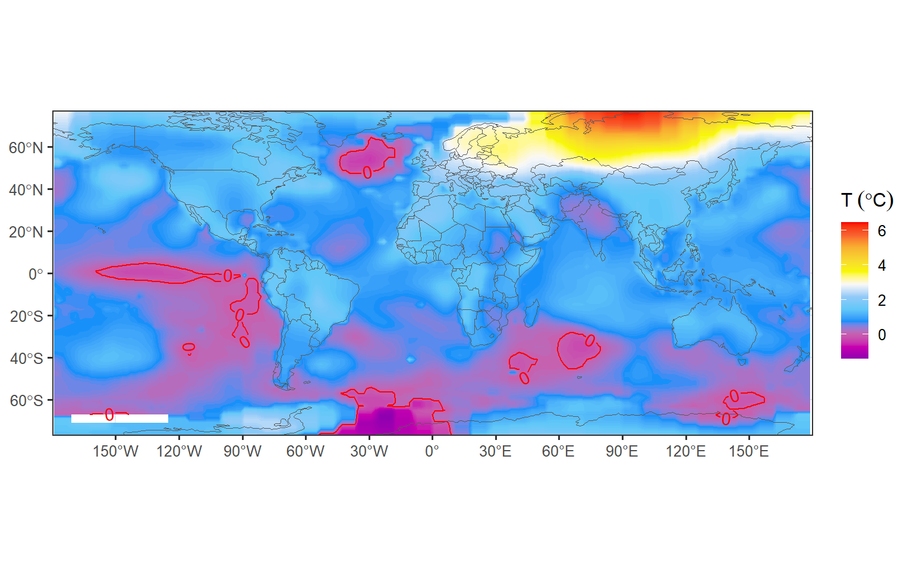
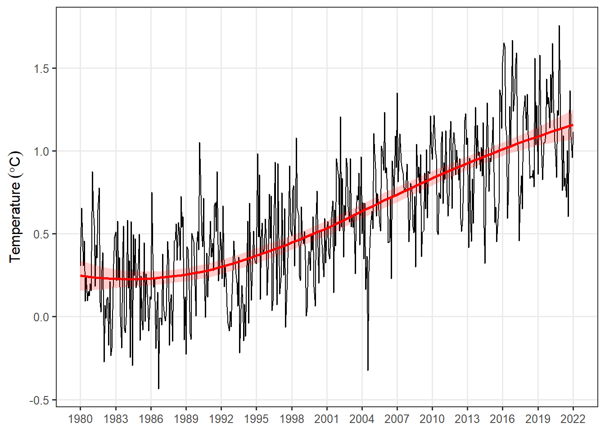
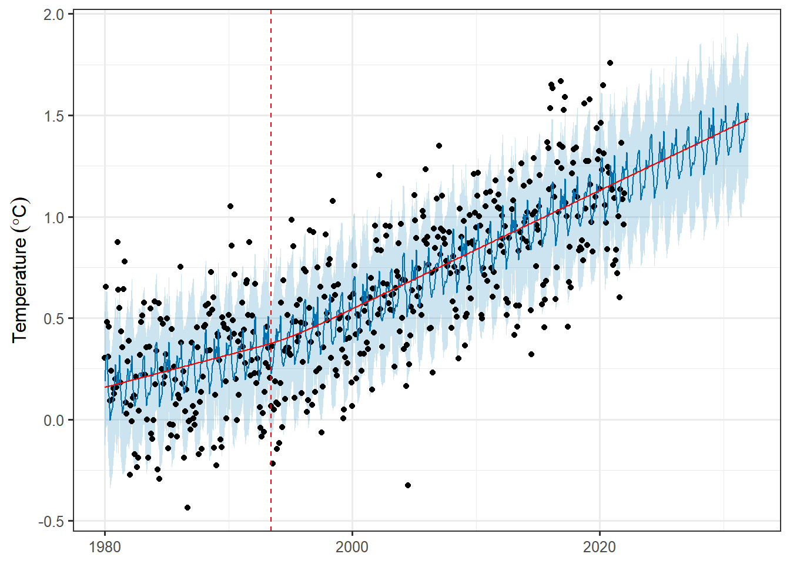
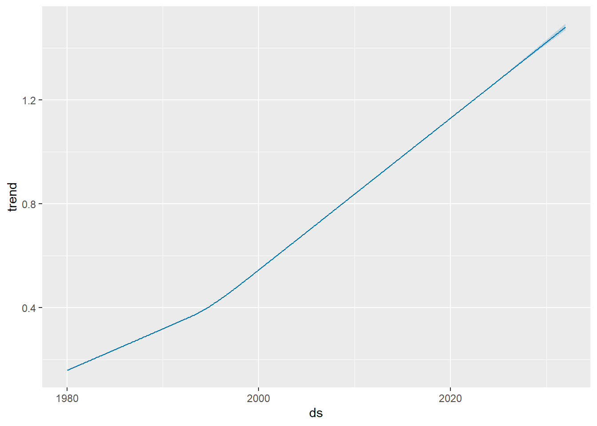

require(sf)
require(tidyverse)
require(patchwork)
require(magrittr)
require(tmap)
require(prophet)
## basemap shapefile from tmap package
data("World")
# color codes
mycolor3 = c("#9000B0", "#C900B0", "#C760AF", "#1190F9", "#60C8F8", "#90C9F8", "#F8F8F8", "#F8F800", "#F8D730", "#f8b030", "#f8602f", "#f80000")Forecasting Rising Temperature with prophet package in R
code
analysis
spatial
Introduction
Time-series analysis aims to analyse and learn the temporal behavior of datasets over a period. Examples include the investigation of long-term records of temperature , sea-level fluctuations, the effect of the El Niño/Southern Oscillation on tropical rainfall, and surface current influences on distribution of temperature and rainfall. Th e temporal pattern of a sequence of events in a time series data can be either random, clustered, cyclic, or chaotic.
Time-series analysis provides various tools with which to detect these temporal patterns. Moreover, it helps in learning the behavior of the dataset by plotting the time series object on the graph. In R language, time series objects are handled easily using ts() function that takes the data vector and converts it into time series object as specified in function parameters. Therefore, understanding the underlying processes that produced the observed data allows us to predict future values of the variable.
In this post we learn how to forecast in R. We will use the prophet package (prophet?), which contain all the necessary routines for time-series analysis. Prophet is a package developed by Facebook for forecasting time series objects or data. Prophet package is based on decompose model i.e., trend, seasonality and holidays that helps in making more accurate predictive models. It is much better than the ARIMA model as it helps in tuning and adjusting the input parameters.
Dataset
We will use the NASA GISTEMP V4 dataset that combine NOAA GHCN meteorological stations and ERSST ocean temperature to form a comprehensive long record of temperature variability of the earth surface. The dataset contains monthly temperature values from 1880 to present, which is widely used to monitor the weather and climate at regional and global scale. Rather than using absolute temperature values, the dataset uses anomaly obtained by using base period (1951-1980).
NASA’s analysis incorporates surface temperature measurements from more than 26,000 weather stations and thousands of ship- and buoy-based observations of sea surface temperatures. These raw measurements are analyzed using an algorithm that considers the varied spacing of temperature stations around the globe and urban heating effects that could skew the conclusions if not taken into account. The result of these calculations is an estimate of the global average temperature difference from a baseline period of 1951 to 1980.
This dataset is open and free to download as netCDF format file at GISTEMP. I have processed the file and we can load as the csv file here.
global = read_csv("../data/temperature_lss_global_1990_2020_2021.csv")The Earth’s global average surface temperature in 2021 tied 2018 (See Figure 1) is the sixth-warmest year on record, according to independent analyses from NASA and the National Oceanic and Atmospheric Administration (NOAA). According to scientists at NASA’s Goddard Institute for Space Studies (GISS), global temperatures in 2021 were 0.85 degrees Celsius above the average for NASA’s baseline period,
temperature = global %>% filter(year == 2021)
ggplot()+
metR::geom_contour_fill(data = temperature, aes(x = lon, y = lat, z = temperature),bins = 120)+
metR::geom_contour2(data = temperature, aes(x = lon, y = lat, z = temperature,label = ..level..), breaks = 0, color = "red")+
ggspatial::layer_spatial(data = World, fill = NA)+
coord_sf(xlim = c(-180,180), ylim = c(-70,70))+
# metR::scale_fill_divergent(midpoint = 0)+
scale_fill_gradientn(colours = mycolor3,
# trans = scales::modulus_trans(p = .1),
name = expression(T~(degree*C))) +
theme_bw(base_size = 12)+
theme(axis.title = element_blank())+
# metR::scale_y_latitude(ticks = 15)+
metR::scale_x_longitude()
Regardless of the COVID-19 pandemic that reduction in mobility and human activities, along with reduced industrial production, has led to lower levels of nitrogen dioxide (NO2) and and the subsequent decrease of fossil fuel burning and CO2 emissions, NASA found that the year 2020 (Figure 2) was the hottest year on record. Continuing the planet’s long-term warming trend, the year’s globally averaged temperature was 1.02 degrees Celsius warmer than the baseline 1951-1980 mean, according to scientists at NASA’s Goddard Institute for Space Studies (GISS) in New York. 2020 edged out 2016 by a very small amount, within the margin of error of the analysis, making the years effectively tied for the warmest year on record. The last seven years have been the warmest seven years on record.
temperature = global %>% filter(year == 2020)
ggplot()+
metR::geom_contour_fill(data = temperature, aes(x = lon, y = lat, z = temperature),bins = 120)+
metR::geom_contour2(data = temperature, aes(x = lon, y = lat, z = temperature,label = ..level..), breaks = 0, color = "red")+
ggspatial::layer_spatial(data = World, fill = NA)+
coord_sf(xlim = c(-180,180), ylim = c(-70,70))+
# metR::scale_fill_divergent(midpoint = 0)+
scale_fill_gradientn(colours = mycolor3,
# trans = scales::modulus_trans(p = .1),
name = expression(T~(degree*C))) +
theme_bw(base_size = 12)+
theme(axis.title = element_blank())+
# metR::scale_y_latitude(ticks = 15)+
metR::scale_x_longitude()
Data Preparation & Exploration
Prophet works best with periodicity data with at least one year of historical data. It’s possible to use Prophet to forecast using sub-daily or monthly data, but for the purposes of this post, we’ll use the monthly periodicity of global temperature—land and ocean . Let’s us read the file into our session
monthly = read_csv("../data/temperature_lss.csv")
monthly %>% FSA::headtail(n = 5) time temperature
1 1880-01-15 -0.2322751
2 1880-02-15 -0.4008110
3 1880-03-15 -0.1818604
4 1880-04-15 -0.2003687
5 1880-05-15 -0.1266611
1701 2021-09-15 1.1336590
1702 2021-10-15 1.3624321
1703 2021-11-15 1.0853070
1704 2021-12-15 0.9597652
1705 2022-01-15 1.1144421Looking on the printed dataset, we note that we have records of land and sea temperature since January 1880 through January 2022. That is the long historical data that suits our analysis. The first thing we need to do is to create a time-series object in R. This is done by using a ts function and specify the start year and the frequency of observation. Since we have monthly records, the frequency for each year will be 12 as the chunk highlight
ts.temp = monthly %>%
pull(temperature) %>%
ts(start = c(1880,1), frequency = 12)But, although we have that long historical dataset, we are more interested in the most recent records. Therefore, we filter all records since 1980 for our analysis. We can achieve this by simply passing the limiting year and month in the window function. Once we have filtered the dataset, we then convert the ts object to prophet format using a ts_to_prophet function from TSstudio package
ts.df = ts.temp %>%
window(start = c(1980,1)) %>%
TSstudio::ts_to_prophet()Tracking global temperature trends provides a critical indicator of the impact of human activities— specifically, greenhouse gas emissions – on our planet. Visualizing the dataset as seen in Figure 3. It’s an undeniable fact the global mean temperature is constantly rising. Earth’s average temperature has risen above 1.2 degrees Celsius) since the late 19th century and the IPCC has pointed out the increase should be limited to 1.5 °C above pre-industrial levels, to have any hope of mitigating the harmful effects of climate change.
ts.df %>%
ggplot(aes(x = ds, y = y))+
geom_line()+
geom_smooth(fill = "red", color = "red", alpha = .2)+
scale_y_continuous(name = expression(Temperature~(degree*C)))+
scale_x_date(date_breaks = "3 year", labels = scales::label_date_short())+
theme_bw(base_size = 12)+
theme(axis.title.x = element_blank(), panel.grid.minor = element_blank())
Forecasting
The first step in creating a forecast using Prophet is importing the prophet library into our R session. Once the prophet library is loaded into our session, we’re ready to fit a model to our historical data. We can achieve that by simply calling theprophet() function using your prepared dataframe as an input:
m = ts.df %>% prophet()Once we have used Prophet to fit the model dataset, we can now start making predictions for future dates. Prophet has a built-in helper function make_future_dataframe to create a dataframe of future dates. The make_future_dataframe function, which allows to specify the frequency and number of periods we would like to forecast into the future. By default, the frequency is set to days. Since we are using daily periodicity data in this example, we will leave freq at it’s default and set the periods argument to 365, indicating that we would like to forecast 365 days into the future.
future = m %>%
make_future_dataframe(120,freq = "month")We can now use the predict() function to make predictions for each row in the future dataframe.
forecast = m %>% predict(future)At this point, Prophet will have created a new dataframe assigned to the forecast variable that contains the forecasted values for future dates under a column called yhat, as well as uncertainty intervals and components for the forecast. We can visualize the forecast using Prophet’s built-in plot helper function:
plot(x = m, fcst = forecast, uncertainty = T,plot_cap = T,)+
scale_y_continuous(name = expression(Temperature~(degree*C)))+
# scale_x_date(date_breaks = "3 year", labels = scales::label_date_short())+
theme_bw(base_size = 12)+
theme(axis.title.x = element_blank())+
add_changepoints_to_plot(m = m, threshold = 0.1)
If we want to visualize the individual forecast components, we can use Prophet’s built-in plot_components function:
plot_forecast_component(m = m, fcst = forecast, name = "trend")